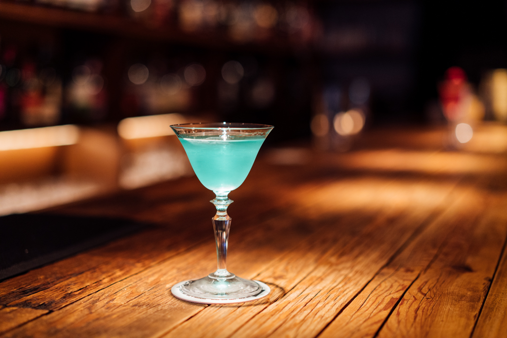

ドリンク&フードについて
Bar Platでは、メニュー名や価格をこの場でご案内する代わりに、私たちが一杯・一皿に込めている向き合い方をご紹介します。
お一人お一人のご要望に合わせて、その場でご相談いただけるのがBar Platのスタイルです。
一杯ずつ、丁寧に

写真提供: Bar Plat・一例のイメージです

写真提供: 佐藤慶臣・一例のイメージです
バーテンダーがカウンターで一杯ずつ丁寧に仕上げるのが、Bar Platのスタイルです。
季節の果実や素材を取り入れることもあり、出来上がるまでの時間も含めてお楽しみいただけます。
ウイスキーやジンなど、こだわりの一本を

写真提供: 田中正一郎

写真提供: Plat Bar
ウイスキーやジンをはじめ、こだわりの酒類を取り揃えています。
お好みの一本をじっくりと味わっていただける時間を大切にしています。
お酒が苦手な方にも
お酒があまり得意でない方には、ノンアルコールカクテルのご相談も承っています。
ご一緒の方も気兼ねなく楽しんでいただけるよう努めています。
手作りのおつまみ
お酒に合わせて、手作りのおつまみをご用意しています。
丁寧に作られた一皿とともに、ゆっくりとした時間をお過ごしください。
メニュー内容・お品書きの詳細は、店舗にて直接ご案内しております。